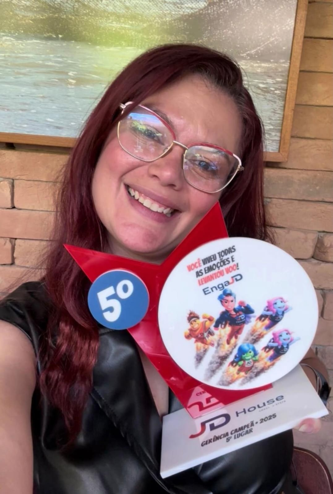
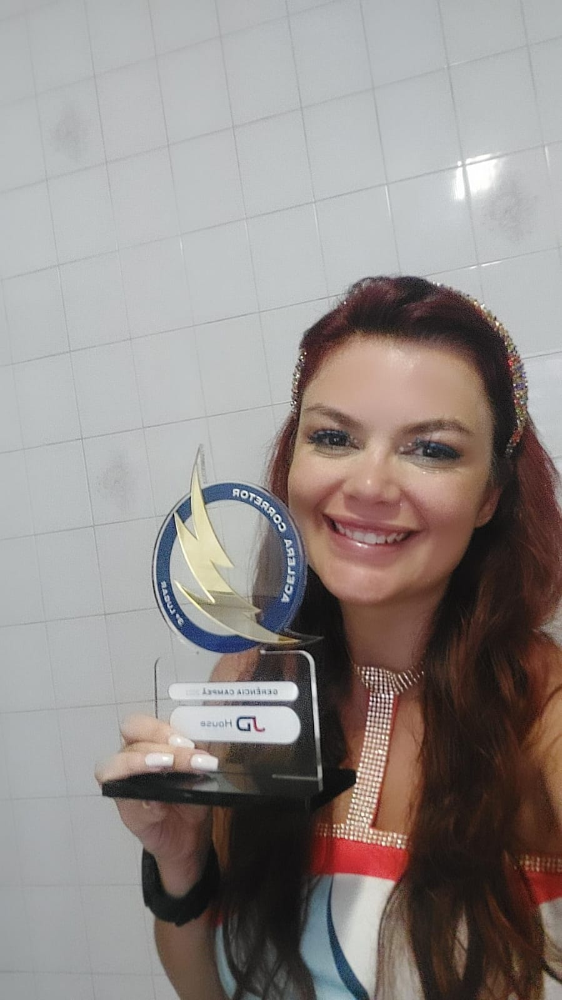
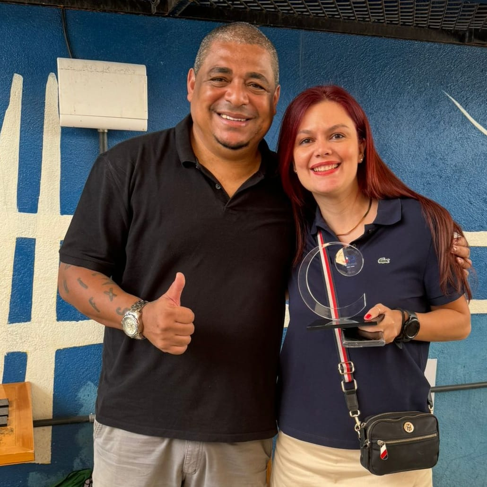

Resultado é consequência de processo
Números que mostram constância.
Indicadores de produção, presença entre as equipes de destaque e uma sequência de reconhecimentos em liderança comercial.
+R$ 500 milhões
+700
14 anos
Top 5
Reconhecimentos
Performance sustentada ao longo dos anos.
Resultados e premiações informados pela própria Luana no briefing profissional de 18/09/2026.




Mais do que ranking
Resultado que se transforma em repertório.
Cada ciclo de premiação registra uma etapa de evolução. Mas o valor comercial está no que esses ciclos ensinam: como organizar rotina, ajustar abordagem, acompanhar o funil e desenvolver o profissional para sustentar a performance.
Em 2025, Luana também participou de um podcast para contar sua experiência de trabalho na empresa, ampliando a troca de conhecimento sobre liderança e vendas.